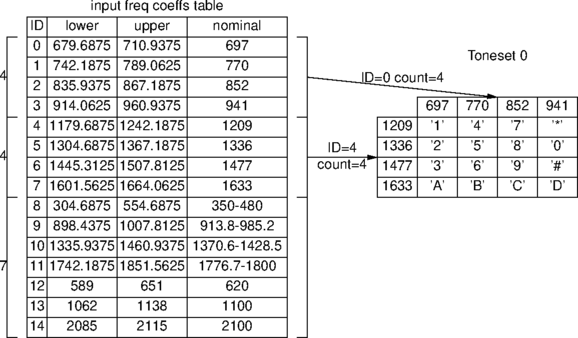

This application note describes how to extend the Prosody's default tone detection capability. The application note DTMF Detection Issues covers some frequent problems encountered when detecting tones.
There are two types of tone detection - simple and complex. A simple tone is detected if the signal meets detection criteria instantaneously. A complex tone (such as a call progress tone) is defined as a sequence of simple tones, with specified cadence.
For both types of tone detection, the maximum range of the detection algorithm is 250Hz to 3406.25Hz, but the range may be further limited using sm_adjust_input_tone_set(). The two pre-loaded tonesets have default range limits as follows:
When starting simple tone detection
sm_listen_for() is given an
active_tone_set_id.
There are two default tonesets, and more tonesets can be defined using sm_add_input_tone_set().
A toneset defines the set of frequencies, frequency pairing (in the case of dual tones) and various signal parameters, such as signal-to-noise ratio, which must be satisfied.
typedef struct sm_input_tone_set_parms {
tSMModuleId module;
tSM_INT band1_first_freq_coeffs_id;
tSM_INT band1_freq_count;
tSM_INT band2_first_freq_coeffs_id;
tSM_INT band2_freq_count;
double req_third_peak;
double req_signal_to_noise_ratio;
double req_minimum_power;
double req_twist_for_dual_tone;
tSM_INT id;
} SM_INPUT_TONE_SET_PARMS;
Frequencies such as band1_first_freq_coeffs_id are defined
with reference to the Input Frequency Table, which specifies lower and
upper frequency boundaries for individual tones. There is one Input
Frequency Table. Extra coefficients (tones) can be added using
sm_add_input_freq_coeffs().
A band may be defined to have zero elements. This is done when a
tone set is defined for single component tone detection. A zero length
band2 indicates that the tones to be detected are simply the tones
indicated by band 1 with no second frequency component.
Here is an illustration of how the default two tonesets relate to the table of frequencies.

The default toneset 0 has four frequencies in both bands, so it detects all the combinations of these - the sixteen DTMF tones.
DTMF signals each have two tones, a low tone and a high tone. There are four possible low tones, and four possible high tones. The digits are defined to use tone indexes in the following order:
| DIGIT | low index | high index | centre frequencies Hz |
|---|---|---|---|
| '1' | 0 | 0 | 697 + 1209 |
| '2' | 0 | 1 | 697 + 1336 |
| '3' | 0 | 2 | 697 + 1477 |
| 'A' | 0 | 3 | 697 + 1633 |
| '4' | 1 | 0 | 770 + 1209 |
| '5' | 1 | 1 | 770 + 1336 |
| '6' | 1 | 2 | 770 + 1477 |
| 'B' | 1 | 3 | 770 + 1633 |
| '7' | 2 | 0 | 852 + 1209 |
| '8' | 2 | 1 | 852 + 1336 |
| '9' | 2 | 2 | 852 + 1477 |
| 'C' | 2 | 3 | 852 + 1633 |
| '*' | 3 | 0 | 941 + 1209 |
| '0' | 3 | 1 | 941 + 1336 |
| '#' | 3 | 2 | 941 + 1477 |
| 'D' | 3 | 3 | 941 + 1633 |
When detecting DTMF tones on Prosody, using sm_listen_for():
map_tones_to_digits is set to
kSMDTMFToneSetDigitMapping, then
sm_get_recognised() will
yield a type of kSMRecognisedDigit, and the ASCII
representation of the digit will be held in param0.
map_tones_to_digits is reset, then
sm_get_recognised() will
yield a type of kSMRecognisedTone, and
param0 and param1 will hold
the indexes, as in the table above.
The toneset for DTMF detection specifies two bands of tones.
Band 1 is the set of 4 low tones, Band 2 is the set of 4 high tones. The tones in each band are defined with reference to the Input Frequency Table. Band 1 starts at tone id 0 (in the table of C2.1), Band 2 starts at tone id 4.
That is:
DTMFToneSet.band1_first_freq_coeffs_id = 0; // DTMF Frequency 1 (684.5 to 709.5Hz) DTMFToneSet.band1_freq_count = 4; DTMFToneSet.band2_first_freq_coeffs_id = 4; // DTMF Frequency 5 (1188.9 to 1229.1Hz)i DTMFToneSet.band2_freq_count = 4;
Other parameters are explained in the description of sm_add_input_tone_set().
Call-progress detection is enabled by setting
enable_cptone_recognition
in a call to sm_listen_for().
When this is enabled, the parameter active_tone_set_id is ignored.
The toneset used by default is toneset 1. This can be changed - see below.
As an example, we will add a tone set to detect R2 CAS Forward tones, defined according to ITU Q.455 as follows:
Any pairing of frequencies 1980, 1860, 1740, 1620, 1500, 1380 Hz. Frequency ranges of +/- 10Hz must be detected.
In order to define a toneset from scratch, we must first define frequency detection limits in the frequency table.
| Centre (Hz) | Low cut-off (Hz) | High cut-off (Hz) |
|---|---|---|
| 1380 | 1370 | 1390 |
| 1500 | 1490 | 1510 |
| 1620 | 1610 | 1630 |
| 1740 | 1730 | 1750 |
| 1860 | 1850 | 1870 |
| 1980 | 1970 | 1990 |
These frequency limits should be added to the tone frequency table as
follows. They will each be assigned an id, which here is stored in the
array r2idx:
int define_r2_freqs(tSMModuleId module, int r2idx[6])
{
int i, rc;
SM_INPUT_FREQ_COEFFS_PARMS ifcp;
double lowfreqs[6] = {1370, 1490, 1610, 1730, 1850, 1970 };
double highfreqs[6] = {1390, 1510, 1630, 1750, 1870, 1990 };
for(i=0; i<=6; i++) {
memset(&ifcp, 0, sizeof(ifcp));
ifcp.module = module;
ifcp.lower_limit = lowfreqs[i];
ifcp.upper_limit = highfreqs[i];
rc = sm_add_input_freq_coeffs(&ifcp);
if (rc) return rc; // error
r2idx[i] = ifcp.id;
}
return rc;
}
The R2 Toneset is then created as follows:
int add_tone_set(tSMModuleId module, int r2idx[6], int *r2tone_set_id)
{
SM_INPUT_TONE_SET_PARMS itsp;
int r2tone_set_id;
int rc;
memset(&itsp, 0, sizeof(itsp));
itsp.module = module;
itsp.band1_first_freq_coeffs_id = r2idx[0];
itsp.band1_freq_count = 6;
itsp.band2_first_freq_coeffs_id = r2idx[0];
itsp.band2_freq_count = 6;
itsp.req_third_peak = 0.01; // Max disturbing frequency -20dB
itsp.req_signal_to_noise_ratio = 0; // None specified: rely on disturb. frequency
itsp.req_minimum_power = -30; // approx -30dBm0
itsp.req_twist_for_dual_tone = 5.0; // approx 7dB
rc = sm_add_input_tone_set(&itsp);
if (!rc) {
*r2tone_set_id = itsp.id;
}
return rc;
}
Any pairing of the component frequencies is allowed, so both Band 1 and Band 2 start at r2idx[0], and have 6 component frequencies. The floating-point parameters specified are approximate, and if accurate detect/reject boundaries are required, the parameters must be empirically optimised.
In TiNG the above calls provide tonesets that are persistent for the life of the process they were called in. This is different from Prosody 1, when the tonesets were persistent until the firmware was downloaded again.
Tones are detected per channel using sm_listen_for() and sm_get_recognised() in a similar way to detection of DTMF tones, as follows:
int listen_for_r2(tSMChannelId channel, int r2tone_set_id)
{
SM_LISTEN_FOR_PARMS smlfp;
int rc;
memset(&smlfp, 0, sizeof(smlfp));
smlfp.channel = channel;
smlfp.active_tone_set_id = r2tone_set_id;
smlfp.tone_detection_mode = kSMToneDetectMinDuration64;
return sm_listen_for(&smlfp);
}
Events may be set, as required, as in the example DTMF.C. There are 15 possible outcomes of the tone detection, corresponding to the 15 combinations of R2 frequencies. ITU Q.441 states that the 'value' of each combination of tones is as follows:
| Tone pair (indexes) | Frequencies (Hz) | value |
|---|---|---|
| 0 + 1 | 1380 + 1490 | 1 |
| 0 + 2 | 1380 + 1610 | 2 |
| 1 + 2 | 1490 + 1610 | 3 |
| 0 + 3 | 1380 + 1730 | 4 |
| 1 + 3 | 1490 + 1730 | 5 |
| 2 + 3 | 1610 + 1730 | 6 |
| 0 + 4 | 1380 + 1850 | 7 |
| 1 + 4 | 1490 + 1850 | 8 |
| 2 + 4 | 1610 + 1850 | 9 |
| 3 + 4 | 1730 + 1850 | 10 |
| 0 + 5 | 1380 + 1970 | 11 |
| 1 + 5 | 1490 + 1970 | 12 |
| 2 + 5 | 1610 + 1970 | 13 |
| 3 + 5 | 1730 + 1970 | 14 |
| 4 + 5 | 1730 + 1970 | 15 |
The result is obtained as follows:
int get_r2_result(tSMChannelId channel, int *result)
{
SM_RECOGNISED_PARMS recog;
int rc;
static int map_parms_to_value[6][6] = { {-1, 1, 2, 4, 7, 11},
{ 1, -1, 3, 5, 8, 12},
{ 2, 3, -1, 6, 9, 13},
{ 4, 5, 6, -1, 10, 14},
{ 7, 8, 9, 10, -1, 15},
{11, 12, 13, 14, 15. -1});
memset(&recog, 0, sizeof(recog));
recog.channel = channel;
rc = sm_get_recognised(&recog);
if (!rc) {
*result = map_parms_to_value[recog.param0][recog.param1];
}
return rc;
}
As explained in an earlier section, the default DTMF toneset consists of two bands, each of four different sets of frequencies. In this section we add extra tones to the DTMF toneset, so that they can be detected in parallel with DTMF detection. Further, the extra tones to be detected are single tones, as opposed to dual tones. The two tones to be added in this case are Fax CNG (1100Hz) and Fax CED (2100Hz).
The DTMF toneset has two bands, each of four frequencies, making up 16 tone pairs. We wish to add an extra 2 tone pairs, i.e. (1100 + 0) and (2100 + 0). We must therefore add two frequencies (1100 and 2100) to one band and a null frequency (0) to the other band. Also, we have decided not to detect the digits 'A' 'B' 'C' and 'D', so the 1633 frequency is removed from the higher band. The bands are now as follows ('L' symbolises DTMF low tone, 'H' symbolises DTMF high tone):
| Band 1 (Hz): | 697 | 770 | 852 | 941 | 1100 | 2100 |
|---|---|---|---|---|---|---|
| Tone | L0 | L1 | L2 | L3 | CNG | CED |
| Band 2 (Hz): | 1209 | 1336 | 1477 | 0 |
|---|---|---|---|---|
| Tone | H0 | H1 | H2 | CNG/CED |
First, we establish that the default pre-loaded DTMF tone frequencies cannot be used. This is because bands of tones must have consecutive IDs. That is, 1100 must come immediately after 941. Therefore, we must add all these tones, in the correct order, to the end of the tone frequency table.
int add_tone_freqs(tSMModuleId module, int *first_freq_id)
{
SM_INPUT_FREQ_COEFFS_PARMS coeff;
int rc, i;
static float lolimit[10] = { 679.6875f, 742.1875f, 835.9375f, 914.0625f, 990f,
1880f, 1179.6875f, 1304.6875f, 1445.3125f, 0 };
static float hilimit[10] = { 710.9375f, 789.0625f, 867.1875f, 960.9375f, 1210f,
2320f, 1242.1875f, 1367.1875f, 1507.8125f, 0 };
for(i=0; i<10; i++) {
memset(&coeff, 0, sizeof(coeff));
coeff.module = module;
coeff.lower_limit = lolimit[i];
coeff.upper_limit = hilimit[i];
rc = sm_add_input_freq_coeffs(&coeff);
if (rc) return rc;
if (!i) {
*first_freq_id = coeff.id;
}
}
return 0;
}
The important index to remember is that of the first tone in the series,
here stored in first_freq_id. The frequency bands are then
defined as follows. The req_* coefficients are taken from the default DTMF
recognition toneset.
int add_tone_set(tSMModuleId module, int first_freq_id, int *tone_set_id)
{
SM_INPUT_TONE_SET_PARMS tone_set;
memset(&tone_set, 0, sizeof(tone_set));
tone_set.module = module;
tone_set.band1_first_freq_coeffs_id = first_freq_id;
tone_set.band1_freq_count = 6;
tone_set.band2_first_freq_coeffs_id = first_freq_id+6;
tone_set.band2_freq_count = 4;
tone_set.req_third_peak = 0.0794;
tone_set.req_signal_to_noise_ratio = 0.756;
tone_set.req_minimum_power = -30;
tone_set.req_twist_for_dual_tone = 10;
rc = sm_add_input_tone_set(&tone_set);
if (rc) return rc;
*tone_set_id = tone_set.id;
return 0;
}
Recognised tones will have the following param0 and
param1 values:
| param0 | |||||||
| 0 | 1 | 2 | 3 | 4 | 5 | ||
|---|---|---|---|---|---|---|---|
| param1 | 0 | '1' | '4' | '7' | '*' | - (a) | - (a) |
| 1 | '2' | '5' | '8' | '0' | - (a) | - (a) | |
| 2 | '3' | '6' | '9' | '#' | - (a) | - (a) | |
| 3 | - (b) | - (b) | - (b) | - (b) | CNG | CED | |
The invalid combinations of param0 and param1
will occur if the following tones appear on the line:
These combinations will be detected, and reported to the application, and should be ignored.
int get_detected(tSMChannelId channel, char *result)
{
SM_RECOGNISED_PARMS rp;
int rc;
static char decode_detected[6][4] = { { '1', '2', '3', '-' },
{ '4', '5', '6', '-' },
{ '7', '8', '9', '-' },
{ '*', '0', '#', '-' },
{ '-', '-', '-', 'N' },
{ '-', '-', '-', 'E' } };
memset(&rp, 0, sizeof(rp));
rp.channel = channel;
rc = sm_get_recognised(&rp);
if (rc) return rc;
if (rp.type == kSMRecognisedTone) {
if (rp.param0 > 5 || rp.param1 > 3) {
// should never happen
} else {
*result = decode_detected[rp.param0][rp.param1];
if (*result != '-') return 0;
}
}
return -1;
}
There are three parameters in the tone detection table which specify signal properties that must be satisfied by the incoming signal. A brief explanation of these is given in prospapi.pdf appendix C.3, but more information on how to calculate these is provided below.
The Prosody signal processing algorithm measures six entities, and performs various comparisons in order to validate the tone, as follows:
req_minimum_power is the measured energy in the two
dominant frequencies. It is simply the value of (P1 + P2).
req_signal_to_noise_ratio is the minimum value of (P1+P2) / P0.
It is in fact the ratio (signal power) : (signal + noise power).
The scaling factor for k dB is 10k/10, therefore a required SNR of 6dB would be as follows:
req_twist_for_dual_tone is the maximum value of P1 / P2
To allow a maximum twist of 9dB:
req_third_peak is the maximum value of P3 / P2.
It controls the maximum energy of an interfering frequency, and can be used to control harmonic distortion, or interfering signals.
To reject a signal with an interfering frequency 20dB below the secondary frequency:
Please note that if a system is required to detect to rigorous limits, these coefficients should be optimised empirically.
Note also that the toneset can be adjusted using
sm_adjust_input_tone_set().
In particular, the MinOnTime and MinOffTime
can be modified only by using
sm_adjust_input_tone_set().
The term 'Call Progress Detection' refers to detection of any tone, which is identified by frequency and cadence - that is, the duration of the tones, pauses, and possibly changes of tone need to be detected.
Call-progress detection involves an extra level of definition above simple tone detection (described above). This level is the Call Progress Tone Table (CPTonetable). By default a set of tones is pre-loaded. Entries in the CPTonetable specify cadences (i.e. sequences, with durations) of tones that are already defined for detection in the tone frequency table. The subset of the frequency table to be used, and the signal parameters are defined in a toneset. The default toneset for Call-Progress detection is toneset 1.
That is:
The application developer may wish to:
This is the simplest modification that can be made to the call-progress detection table. Here we use the example of adding UK ring tone (this CP tone is already loaded by default):
The default toneset 1 has the following relevant values:
band1_first_freq_coeff = 8;
band1_freq_count = 6;
U.K. Ring tone is specified as follows (repeated):
| frequency (Hz) | |||||
|---|---|---|---|---|---|
| 400Hz | OFF | 400Hz | OFF | ||
| time (msec) | nominal | 400 | 200 | 400 | 2000 |
| min | 288 | 128 | 288 | 1472 | |
| max | 512 | 256 | 512 | 2496 | |
In the two 'ON' states, the frequency id is 1. freq_id is
relative to the band1_first_freq_coeff of the active (in
this case default) Toneset (toneset 1) PLUS ONE. A freq_id
of 0 means silence (OFF).
The following code segment shows how this tone would be added.
Note: Two different versions of the cadence are loaded, both with the same result id. This is for speed of detection - the actual ring tone may start in any phase of its repeated cadence, and if only one cadence was specified in the CP tone table, the whole of the cadence would have to be visited before a detection occurred.
The entire cadence is not specified in either table entry. This is because the partial cadences specified are considered sufficient to detect this tone, and are unique with respect to other cadences in the table. It is important that no cadences in the table are subsets of other cadences, as the subset cadence will be detected unintentionally. The first entry detects a little after 400 + 200 + 400 = 1000 mS, while the second detects a little after 400 + 2000 + 400 = 2800 mS, whereas the complete cadence takes 400 + 200 + 400 + 2000 = 3000 mS, which is significantly longer.
int add_uk_ring_tone(tSMModuleId module, int uk_ring_id)
{
SM_INPUT_CPTONE_PARMS cp;
memset(&cp, 0, sizeof(cp));
cp.module = module;
cp.id = uk_ring_id;
cp.state_count = 3;
cp.states[0].freq_id = 1; // On for 400ms
cp.states[0].minimum_cadence = 288;
cp.states[0].maximum_cadence = 512;
cp.states[1].freq_id = 0; // Off for 200ms
cp.states[1].minimum_cadence = 128;
cp.states[1].maximum_cadence = 256;
cp.states[2].freq_id = 1; // On for 400ms
cp.states[2].minimum_cadence = 288;
cp.states[2].maximum_cadence = 512;
rc = sm_add_input_cptone(&cp);
if (rc) return rc;
memset(&cp, 0, sizeof(cp));
cp.module = module;
cp.id = uk_ring_id;
cp.state_count = 3;
cp.states[0].freq_id = 1; // On for 400ms
cp.states[0].minimum_cadence = 288;
cp.states[0].maximum_cadence = 512;
cp.states[1].freq_id = 0; // Off for 2000ms
cp.states[1].minimum_cadence = 1472;
cp.states[1].maximum_cadence = 2496;
cp.states[2].freq_id = 1; // On for 400ms
cp.states[2].minimum_cadence = 288;
cp.states[2].maximum_cadence = 512;
rc = sm_add_input_cptone(&cp);
if (rc) return rc;
return 0;
}
Addition of a new frequency to those in the call-progress frequency set involves three stages:
For example, given the default Call-Progress tone set, add a detector for the following tone (repeated):
| frequency (Hz) | |||||
|---|---|---|---|---|---|
| 1000Hz | OFF | 3000Hz | OFF | ||
| time (msec) | nominal | 400 | 200 | 400 | 200 |
| min | 288 | 128 | 288 | 128 | |
| max | 512 | 256 | 512 | 256 | |
Assuming 10% tolerance in frequency, add the 1000Hz and 3000Hz tones, using sm_add_input_tone_set(), as described above. If no other tone frequencies have been added, the indices for these new tones will follow from 'Fax CED'.
The new toneset includes the default call-progress frequencies (7 frequencies, starting at index 8), and the new tones. Therefore:
...
SM_INPUT_TONE_SET_PARMS tone_set;
...
tone_set.module = module;
tone_set.band1_first_freq_coeffs_id = 8;
tone_set.band1_freq_count = 9;
tone_set.band2_first_freq_coeffs_id = 0;
tone_set.band2_freq_count = 0;
tone_set.req_third_peak = 0.1;
tone_set.req_signal_to_noise_ratio = 0.5;
tone_set.req_minimum_power = -23;
...
rc = sm_add_input_tone_set(&tone_set);
new_tone_set_id = tone_set.id;
There is always one call-progress toneset. By default, this is toneset 1. We wish to use a different toneset, which has just been loaded. The index of this toneset was returned by the call to sm_add_input_tone_set().
Do this using sm_reset_input_cptones(), as documented.
Because all of the tones in the pre-loaded call-progress table were defined relative to toneset 1, they are no longer valid. They must all be re-loaded, using sm_add_input_cptone(), as described above.
Finally, add the new call-progress tone as follows. Remember that the frequency IDs are relative to the start of the section of tone table used in our toneset. We are using 8..16, where 15 and 16 are the two new tones, so their IDs are 8 and 9.
int add_custom_tone(tSMModuleId module, int custom_id)
{
SM_INPUT_CPTONE_PARMS cp;
memset(&cp, 0, sizeof(cp));
cp.module = module;
cp.id = custom_id;
cp.state_count = 3;
cp.states[0].freq_id = 8; // 1000Hz
cp.states[0].minimum_cadence = 288; // On for 400ms +/- 28%
cp.states[0].maximum_cadence = 512;
cp.states[1].freq_id = 0; // Silence
cp.states[1].minimum_cadence = 128; // Off for 200ms
cp.states[1].maximum_cadence = 256;
cp.states[2].freq_id = 9; // 3000Hz
cp.states[2].minimum_cadence = 288; // On for 400ms
cp.states[2].maximum_cadence = 512;
rc = sm_add_input_cptone(&cp);
if (rc) return rc;
memset(&cp, 0, sizeof(cp));
cp.id = uk_ring_id;
cp.state_count = 3;
cp.states[0].freq_id = 9;
cp.states[0].minimum_cadence = 288; // On for 400ms
cp.states[0].maximum_cadence = 512;
cp.states[1].freq_id = 0;
cp.states[1].minimum_cadence = 128; // Off for 2000ms
cp.states[1].maximum_cadence = 256;
cp.states[2].freq_id = 8;
cp.states[2].minimum_cadence = 288; // On for 400ms
cp.states[2].maximum_cadence = 512;
rc = sm_add_input_cptone(&cp);
if (rc) return rc;
return 0;
}
Once again we have included two alternative definitions of this cadence, to detect the tone quickly, whichever phase it starts in.
It is possible, using the tone detection mode kSMToneLenDetectionMinDurationxx to retrieve the duration of a tone from a call to sm_get_recognised(). This will allow a certain degree of cadence detection to be carried out by the user application. For example, if the combined DTMF/CNG/CED tone table is used, as described above, the application may be required to validate that the CNG tone lasts 0.5s and/or the CED tone lasts 3s. The application can simply check the param1 (duration) parameter when the tone is detected.
The TiNG module required for tone detection is td (used by sm_listen_for()).
Document reference: AN 1352